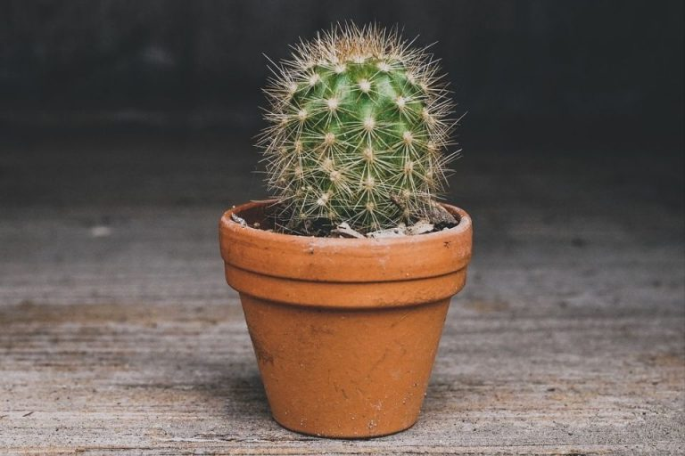
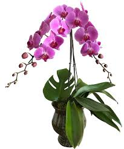
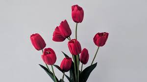
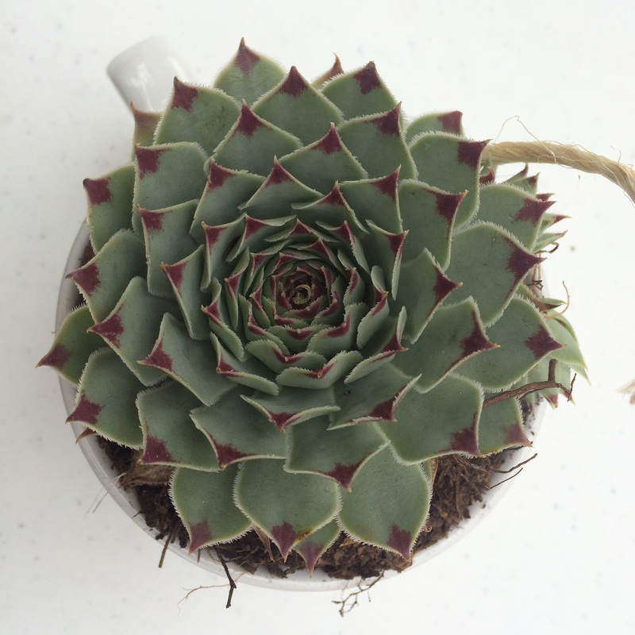
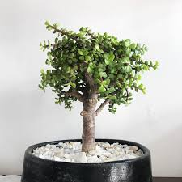
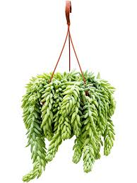
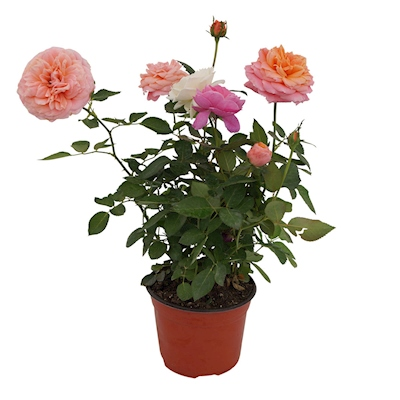

Galería de Plantas
- 
- 
- 
- 
- 
-

- 
- 
Donde florecen los sueños
En Vivero Colibrís, nuestra misión es ofrecer una diversidad de plantas de alta calidad, promoviendo la sostenibilidad y el amor por la naturaleza. Nos dedicamos a inspirar y educar a nuestra comunidad sobre la importancia de la jardinería y el cuidado del medio ambiente, proporcionando productos y servicios que enriquecen los espacios verdes de nuestros clientes.
Nuestra visión es convertirnos en el vivero líder en la región, reconocido por nuestra excelencia en la venta de plantas, así como por nuestro compromiso con la sostenibilidad y la innovación. Aspiramos a ser un referente en el sector, contribuyendo al bienestar del planeta y de las personas, fomentando una conexión más profunda entre los seres humanos y la naturaleza.
En Vivero Colibrís, creemos que cada planta es una oportunidad para crear un mundo más verde y saludable, y nos dedicamos a hacer realidad esta visión cada día.
Valeria Mendoza Alvarez
Proximamente podras comprar nuestras plantas en línea!!
Si deseas ponerte en contacto con nosotros, utiliza la siguiente información: